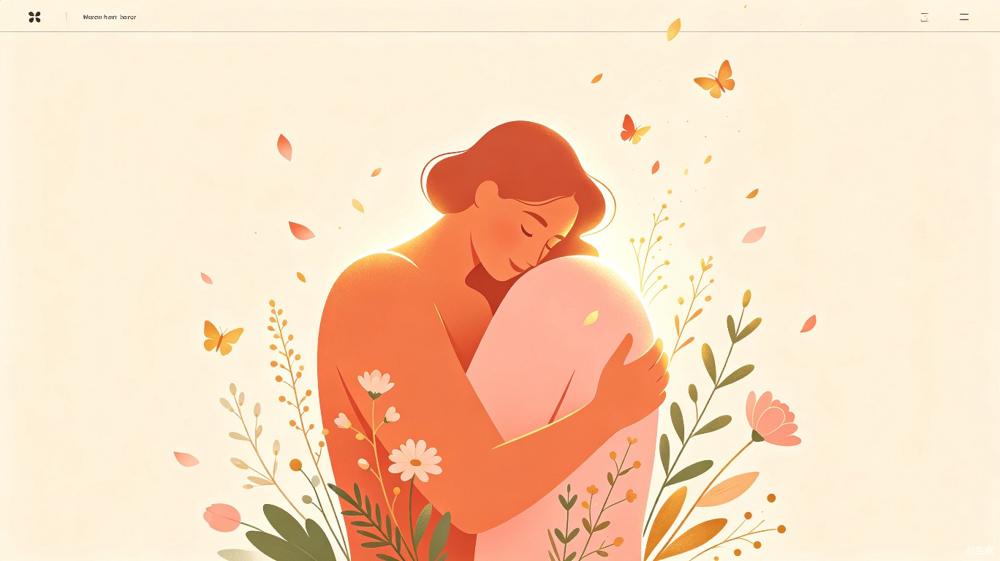
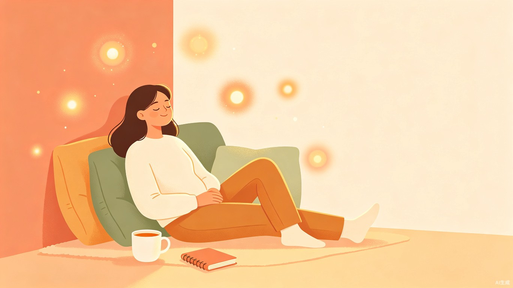
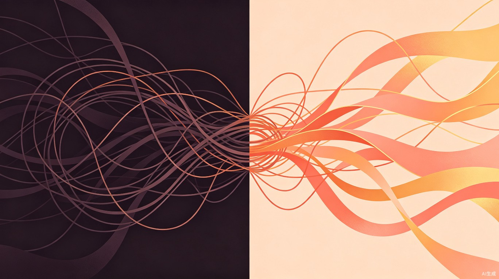
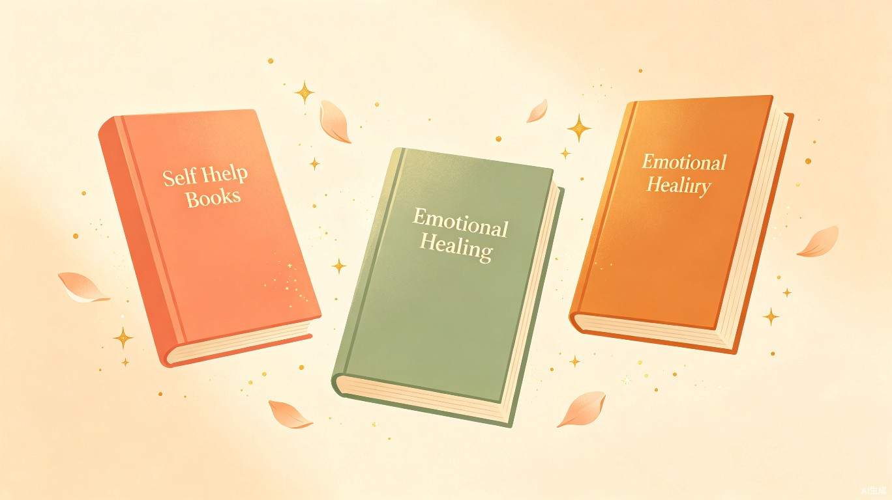
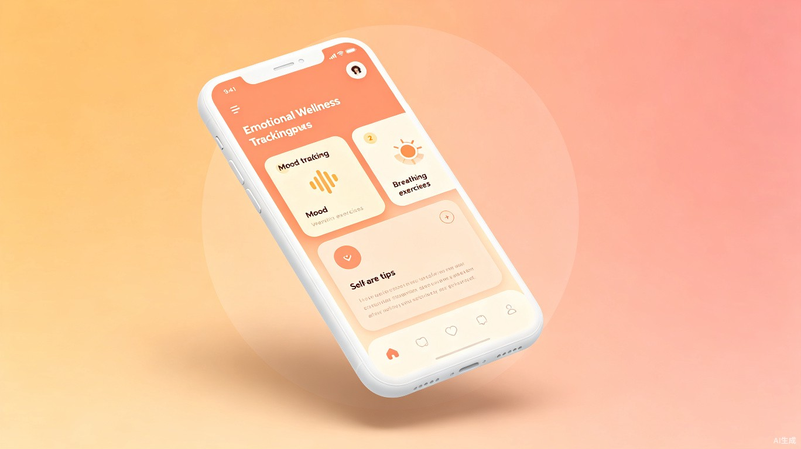

祝大家都能够摆脱内耗
一个温暖你、引导你走出精神内耗的创意应用
你是否经常陷入这样的困境：明明什么都没做，却感到疲惫不堪；明明事情已经过去了，却在脑海中反复回放、自我苛责；明明想好好休息，却因为"应该做"和"想要做"之间的拉扯而无法放松。
这就是精神内耗——一种无声却持续消耗我们能量的心理状态。它让我们在情绪的漩涡中反复挣扎，感到无力、焦虑，甚至对自我产生怀疑。
我们希望通过这款引导式应用，帮助每一位被内耗困扰的朋友，找到走出情绪迷宫的路，学会拥抱真实的自己，让内心重新充满力量。

精神内耗的三大核心表现，你是否也深有体会？
同一件事在脑海中翻来覆去地想，做了决定又后悔，不做决定又焦虑，陷入无休止的思考循环。
总觉得自己不够好，拼命讨好别人、满足他人的期待，忽略了自己的感受和需求，付出却得不到理解。
持续的内心消耗让你感到身心俱疲，对事物失去热情，明明睡了一觉却依然觉得累，做什么都提不起劲。
内耗的本质是能量的持续流失。当我们学会觉察、接纳和转化，那些纠缠的线团就能重新化为柔软的丝带。

这个创意的灵感来自几本温暖而有力的书。它们教会我们：觉察情绪是第一步，而真正的改变始于接纳真实的自己。

你的情绪不是事实，而是你对事实的解读。当你改变了解读方式，情绪就会随之改变。
倦怠不是因为你不够努力，而是因为你一直在忽略自己的边界。学会停下来，也是一种勇敢。
你不需要讨好所有人才能获得价值。真正的安全感来自内心，而非外界的认可。
一款引导式的App / 小程序，帮助用户觉察内耗、理解原因、并逐步养成不内耗的行为习惯。

识别当下是否正在内耗
追溯内耗的根源
提供科学可行的应对策略
随时记录你的情绪状态，通过智能引导帮助你识别内耗的模式和触发点。
基于认知行为疗法理念，帮助你识别和调整那些让你陷入内耗的思维习惯。
内置呼吸引导和冥想练习，在焦虑来袭时帮你快速平复情绪、回到当下。
制定个性化的恢复方案，包括能量管理、边界设定和自我关怀的日常微习惯。
"我知道不应该再想了，可就是停不下来。白天工作的时候纠结同事的一句话，晚上躺在床上又后悔今天的某个决定……每天都很累，却不知道在忙什么。"—— 一位长期被内耗困扰的朋友
不了解内耗的原因 — 知道自己不开心，却说不清到底为什么
不清楚如何摆脱 — 尝试过很多方法，但总是回到原点
随时都可能发作 — 工作中、休息时、甚至睡前的安静时刻
缺乏专业的引导 — 心理咨询门槛高，自我摸索效率低
这个创意不仅关乎个人成长，更关乎我们每个人的福祉和社会的温暖。
帮助用户建立健康的情绪认知模式，提升自我觉察能力，培养积极的生活态度。
降低心理健康门槛，让更多人能便捷地获得情绪引导，减少社会整体的精神内耗。
将心理学知识以温暖友好的方式传递给大众，让情绪健康成为每个人的日常关注。